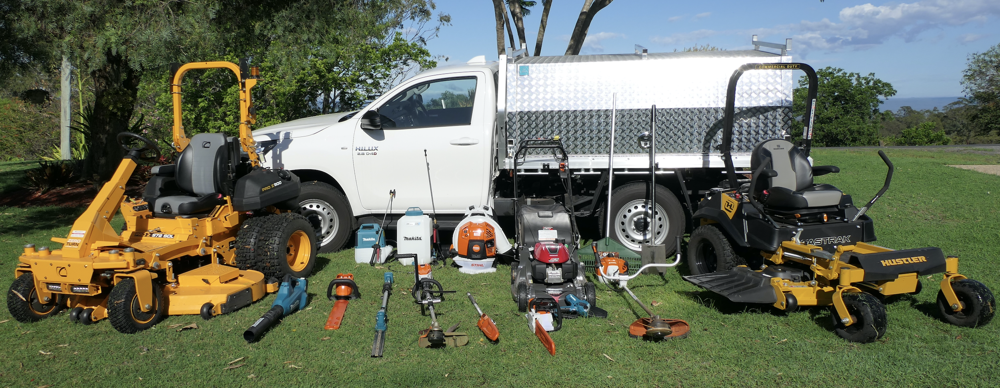

Get a Free Lawn Mowing Quote in Laidley
Send us your address and rough block size and we'll come back with a fixed mowing price — usually the same day. No call-out fee, no obligation.
How to Reach Us
The fastest way to get a price is a phone call — we can usually quote a standard residential block over the phone in a couple of minutes. For acreage or anything unusual, we'll arrange a quick look at the property first.
- Phone: 0408 765 657
- Email: callumsmowing4341@gmail.com
- Based at: 5 Range Crescent, Laidley QLD 4341
- Service area: Laidley, Plainland, Gatton, Regency Downs, Hatton Vale and Kensington Grove

What Happens After You Get in Touch
We respond to every enquiry, usually within one business day. For a straightforward suburban block we'll confirm a fixed price straight away and offer you the next available slot. For acreage, sloped ground or properties that have been left a while, we'll book a short site visit so the quote reflects what's actually there — that way the price we give is the price you pay.
Request a Price Online
Prefer to write it down? Fill in the form and include your suburb, approximate block size and which services you're after. The more detail you give us, the more accurate the number we send back.
Areas We Cover
We run mowing routes across the Lockyer Valley from our base in Laidley, covering Plainland, Gatton, Regency Downs, Hatton Vale and Kensington Grove. Properties inside this run don't attract a travel fee. If you're on the edge of these suburbs or slightly beyond, call anyway — if we're already scheduled nearby that week, we can usually make it work.
Quoting and Booking Questions
How do I get a lawn mowing quote in Laidley?
Call 0408 765 657 or email us with your suburb and approximate block size. Most standard residential properties in Laidley can be quoted over the phone within minutes. Larger or acreage blocks usually need a quick site visit, which we arrange at no cost.
How much does a mowing service cost?
Price depends on block size, grass length, slope and edging required, with acreage quoted per acre. You'll always get a fixed figure before we start, not an hourly estimate that moves — and there's no call-out fee for the quote itself.
How quickly can you start?
It shifts with the season — spring and the weeks after heavy summer rain are our busiest periods, so it pays to call early if you need a property tidied before a specific date. Give us a ring and we'll tell you the next available slot on our Lockyer Valley run.
Do you need me to be home during the service?
No. Once we've quoted the property and you're happy with the price, most customers leave us to it. We just need gate access and any dogs secured. We'll message when the job is done and invoice afterwards.
Do you service commercial and rental properties?
Yes. We work with owners, property managers and commercial clients across Gatton and Laidley on set schedules, invoicing directly and providing completion photos where an agent requires them. Certificates of currency are available on request.
Let's Get Your Property Sorted
Whether it's a single tidy-up before an inspection or a permanent fortnightly slot, we're ready when you are.